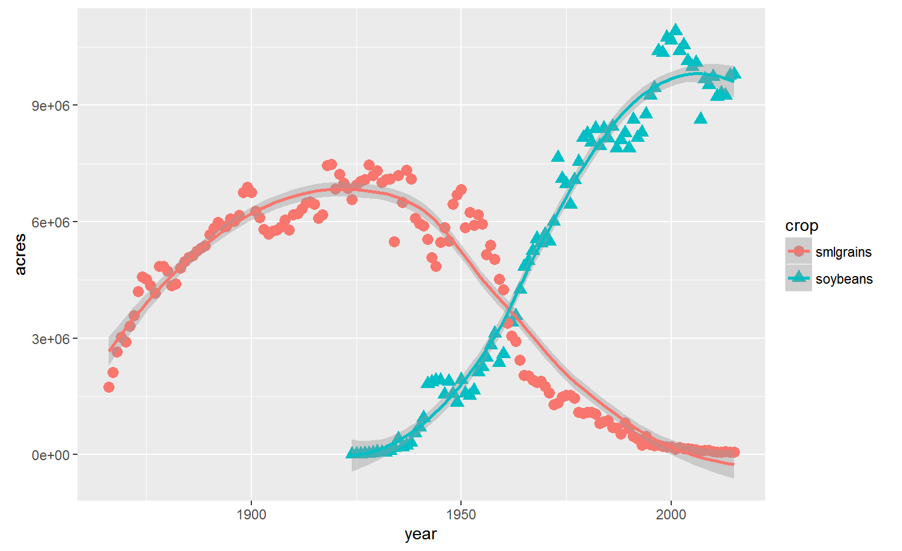
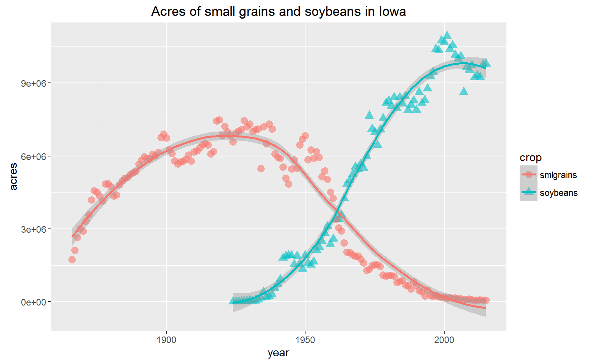
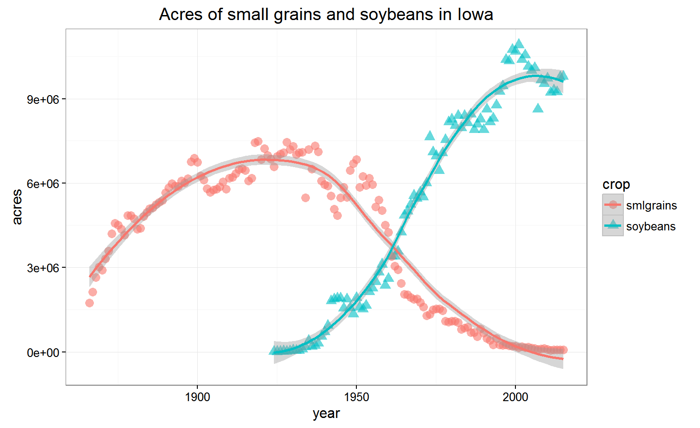
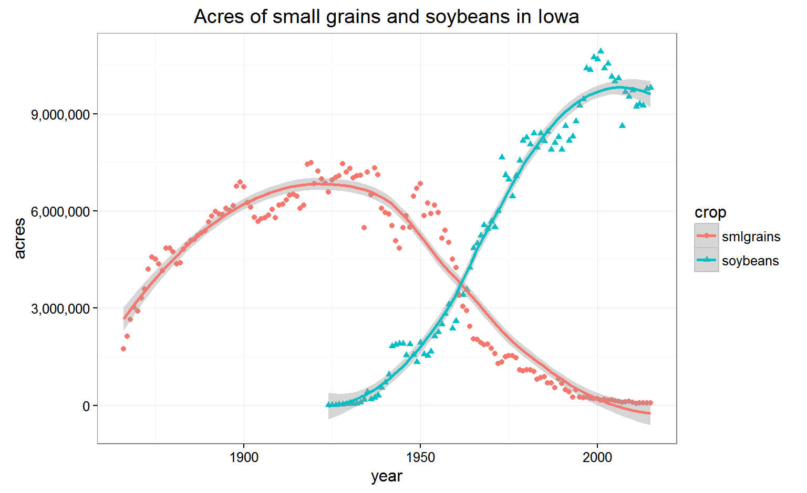
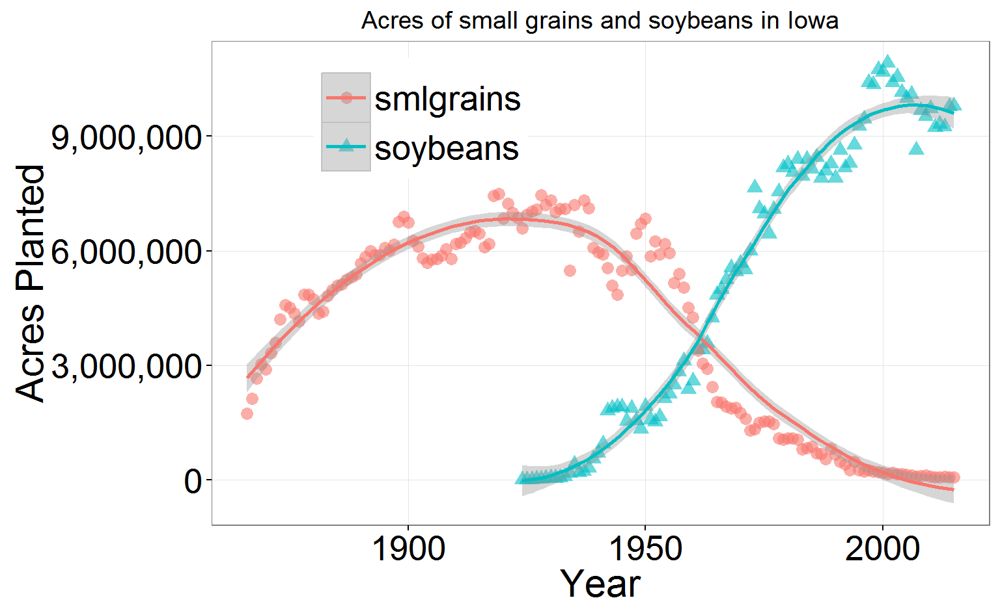

Why
Student: I finished the analysis and look at the great results! What do you think?

Ranae Dietzel and Andee Kaplan
Student: I finished the analysis and look at the great results! What do you think?
Advisor:
aes - you may want to add shapeggtheme componentsggplot(both, aes(x=year, y=acres, group=crop, color=crop, shape=crop))+
geom_point(size=3)+
geom_smooth()
ggplot(both, aes(x=year, y=acres, group=crop, color=crop, shape=crop))+
geom_point()+
geom_smooth()+
ggtitle("Acres of small grains and soybeans in Iowa")
theme_set(theme_bw())
ggplot(both, aes(x=year, y=acres, group=crop, color=crop, shape=crop))+
geom_point()+
geom_smooth()+
ggtitle("Acres of small grains and soybeans in Iowa")
library(scales)##
## Attaching package: 'scales'## The following objects are masked from 'package:readr':
##
## col_factor, col_numerictheme_set(theme_bw())
ggplot(both, aes(x=year, y=acres, group=crop, color=crop, shape=crop))+
geom_point()+
geom_smooth()+
ggtitle("Acres of small grains and soybeans in Iowa")+
scale_y_continuous(labels = comma)
theme_set(theme_bw())
ggplot(both, aes(x=year, y=acres, group=crop, color=crop, shape=crop))+
geom_point(size=3, alpha = .6)+
geom_smooth()+
ggtitle("Acres of small grains and soybeans in Iowa")+
scale_y_continuous(labels = comma)+
labs(x = "Year",y = "Acres Planted") +
theme(#panel.grid.major = element_blank(),
panel.grid.minor = element_blank(),
#panel.background = element_blank(),
axis.line = element_line(),
legend.position=c(.27,.84), legend.title=element_blank(),
legend.text = element_text(size=20),legend.key.size=unit(1, "cm"),
axis.title.x = element_text(size=22,vjust=-0.5),
axis.title.y = element_text(size=22,angle=90),
axis.text.x = element_text(colour="black", size=20),
axis.text.y = element_text(colour="black", size=20)) 

my_theme<-theme_bw()+
theme(#panel.grid.major = element_blank(),
panel.grid.minor = element_blank(),
#panel.background = element_blank(),
axis.line = element_line(),
legend.position=c(.27,.84), legend.title=element_blank(),
legend.text = element_text(size=20),legend.key.size=unit(1, "cm"),
axis.title.x = element_text(size=22,vjust=-0.5),
axis.title.y = element_text(size=22,angle=90),
axis.text.x = element_text(colour="black", size=20),
axis.text.y = element_text(colour="black", size=20)) specific commands
axes
legends
alpha, color, size, shape, text, themes